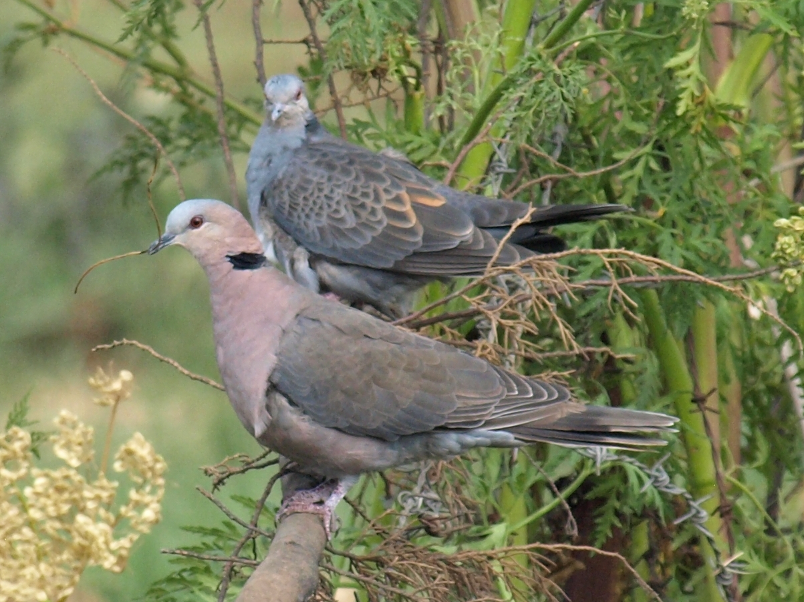

30-33cm.
|  |
There is little about the eye of the Red-Eyed Dove in this picture to justify the name. The dull red eye ring is virtually invisible. The diagnostic broad buffy band at the tip of the tail is clearly visible.
The dove in the background is a Dusky (Pink-Breasted) Turtle Dove.